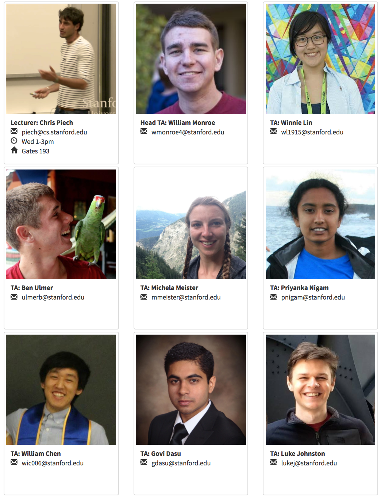

EXAMS
Midterm
Thursday, Nov 2nd
7-9pm
Based on last name
Final
Thursday, Dec 14th
3:30-6:30pm
Hewlett 200
Teaching Team
cs109@cs.stanford.edu
Lecturer
PSet #3 has been released! It uses real probability density functions from the IPCC Climate Change report, has you predict elections and analyze a bloom filter (a probabilistic datastructure).

A Galton board is a physical Binomial distribution where the bucket index that a ball falls into R ~ Bin(n,p) where n is the number of levels and p is the probability of going right each time the ball hits a pin. Check out the JavaScript demo, and the cool video bellow:
Old Announcements
There will be a second and final optional Python tutorial led by TA Yuling Liu, Friday (Oct 6th) from 4:30pm-5:20pm in 370-370. If you missed the first review session, you can catch up by reading Yuling's awesome notes.
In this section we are going to go over Python libraries that are useful for probability. Again, python is not required for CS109. However a few problems in the psets require coding and seeing as Python is the language of computer science for probability, its worth learning.
Our gradescope page is live! The entry code is MP5GG5.
If you're new to Gradescope, you can join the class by going to https://gradescope.com/ and clicking the button in the top right marked "Sign Up for Free." Select "Student," then enter the entry code, your full name, email address, and 8 digit student id.
If you have any questions, feel free to post on Piazza.
Please sign up for section by filling out this form:
https://goo.gl/forms/nEpp2D2ZNQkG0sH22.
Once a week you are going to meet in a small group section. We are going to find the best weekly time for everyone. Section sign ups will close on Saturday at 11:59pm. Preferences are not first come first serve.
PSet #1 has been released! It is due next Firday, Oct 6th at 3:00pm. Submission will be via gradescore. Further submission instructions will come out next week. Office hours will start tomorrow -- see the office hour calendar for times and locations.
You can optionally write up your problem sets using LaTex. See this intro to LaTex, and the LaTex code used to generate it. Though you may install LaTeX, it is often much easier to use an online LaTeX editor. Two good options are: overleaf.com and sharelatex.com.
There will be an optional Python tutorial led by TA Yuling Liu, Friday (Sept 29th) from 4:30pm-5:20pm in 370-370. This will be the first of a two part series which will get you caught up to python in case you have never used it before. Python is not required for CS109. However a few problems in the psets require coding and seeing as Python is the language of computer science for probability, its worth learning. We will record the session.
We put together some handouts to help you understand where we are going to go in CS109 and how we plan to get there. See the Administrivia handout for details on logistics.
The Course Schedule page shows you the topics that we are going to cover in CS109 and the corresponding readings. We will also post materials from lecture on the schedule page.
Welcome to CS109! We are looking forward to a fun quarter. Class starts Monday Sept 25th at 3:30pm in Hewlett 200.